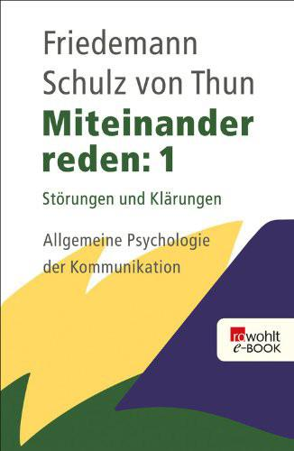

Störungen und Klärungen
Talking with each other: disturbances and clarifications · a general psychology of communication

The book that gave German classrooms, offices and couples' counselling its most famous picture: the message square. Every sentence carries four messages at once (a fact, something about the speaker, something about the relationship and a request), and every listener can hear it with four different ears. Schulz von Thun, a Hamburg psychologist, built the model from Watzlawick and Bühler, then spent the rest of the book on what goes wrong on each side and how to clear it up. He ends by warning against his own toolbox: what matters is attitude, not phrasing.
Part A · The anatomy of a message
A man sits next to a woman who is driving. He says: “There, up ahead, it's green!” Schulz von Thun takes this single sentence apart and finds four messages in it:
Her reply, “Are you driving or am I?”, isn't about the traffic light at all. She is rejecting the relationship message, not the fact. Three insights follow from the model:
His early mistake, he admits, was to teach “nice packaging”: replace “Don't talk such nonsense!” with “I'm not sure I can agree with you on every point.” That denies what is really going on, and the resentment keeps growing. The new yardsticks are clarity and congruence (Stimmigkeit): with what is going on inside me, with the other person and with the truth of the situation.
Try it · the four ears
Pick a sentence, look at its four sides, then choose which ear the listener uses and see what comes back. Most of the examples are the book's own.
Part A · Receiving with four ears
The listener is free to choose which side to respond to, and that choice steers the whole conversation. The goal is a balanced four-earedness and the ability to pick the ear that fits the moment.
The classic mistake, especially of men and academics: fighting out relationship problems on the factual level. “Do you still love me?” “Well, first we'd have to define love…”
The book's key scene: a mother tells her sixteen-year-old to put on a jacket because it's cold. “It isn't cold!” “Barely 10 degrees and windy.” “Look at the thermometer: eleven and a half!” Ten minutes about temperature, and the daughter storms out without the jacket. The real fight was about being treated like a small child. Better would have been: “Your suggestion isn't wrong, but stop giving me orders like that. It makes me feel like a little kid.”
Hears a verdict on oneself everywhere: if they laugh, they're laughing at me; if they look away, they're avoiding me. “Lovely weather today!” “I know I'm superficial…”. The opposite error exists too: brushing off factual criticism by complaining about the tone, and missing the substance.
Asks “What's going on with him?” A father bellows about the messy room. A small child hears “So that's what I am.” An older one hears “He's had a bad day.” Hearing accusations with this ear makes you calmer and a better listener. Taken too far, it becomes immunisation: “You only say that because of your father issues.”
Active listening (Rogers, Gordon) uses this ear deliberately. A woman says her husband comes home late most nights. Instead of advice, the counsellor reflects the feeling back: “You feel rather alone with the problems?” Empathise first, add your own two cents afterwards.
The “appeal jump”: a guest glances around and is handed an ashtray. “Is there still coffee in the pot?” “I'll make some right away!” This ear lives other-directed; the author remembers laughing at every right moment as a teenager without checking whether he found anything funny. Used with care, it protects against manipulation: “What does your migraine do for you?”
“What's that green stuff in the sauce?” “If you don't like it, you can eat somewhere else!” (It was capers.) Meanings don't travel with the words; the listener decodes them through their self-image, their picture of the speaker and their milieu. Some messages come coupled: “Tidy your room” also carries “you should have done it ages ago”; “I was sad you didn't come” is heard as “it's your fault”; “I feel so alone” is heard as “fix it”, when it often only means “listen to me”. You can break the coupling out loud: “When I say I'm disappointed, I don't mean it's your fault. I just want to tell you what's going on with me.”
Who was right can neither be decided nor does it matter: one of them said this, the other heard that.
Part A · Feedback
A message is like a mushroom: it can be eaten raw or cooked, and the sender never knows which. What it does depends on the inner soil it lands on. Someone who believes mistakes are terrible explodes at mild criticism. As a teenager the author was furious when his mother said to an uncle offering a cigarette, “Please don't, we're so glad he doesn't smoke!”, even though he didn't smoke. The hidden message was: you can't defend yourself without me.
The remedy is to keep apart three things that fuse in a split second:
Check your fantasies. “He looks tired, I won't bother him now.” Fantasies are something of mine; they may be true or not, and only the other person can say. Keeping them caged leads to self-fulfilling prophecies (the neighbour who is sure he's a nuisance pays a half-hearted visit, and then really is one). Saying them builds a bridge: “I suspect you're tired and don't want to talk about money now. Is that right?” Unspoken feelings turn into thick air, and the author borrows a fine image: the container of love is often sealed with the cork of unexpressed negative feelings.
Own your reaction. “You insulted me!” sets up a tribunal; “I feel hurt” reports a fact about me. Du-messages translate “I felt passed over” into “you're inconsiderate”; I-messages do the reverse. Psychological diagnoses (“You're putting up a wall…”) are the worst kind of you-message.
Quick check · perceive, interpret or feel?
Part A · Interaction and metacommunication
Traits are rarely one person's alone. The helpless partner needs a protective one; the endless talker needs patient listeners; the “shameless” guest who brings his dog despite the white carpet and your allergy meets your inability to say no. This view takes the blame out of it (no villain, no poor victim) and hands back a burden and a chance: “Why don't I dare interrupt him? How do I let myself be put down?”
Punctuation (Watzlawick): she nags because he withdraws; he withdraws because she nags. Each experiences their own behaviour as a reaction. Chicken and egg cannot be settled, so stop trying, and talk about the pattern: “This is what we do to each other. How can we change it?”
Metacommunication, talking about how we talk, is the book's main remedy. It is not academic jargon (“I respond rather to the non-verbal part of your incongruent messages”) but a brave look inside: what is going on in me right now, how do I experience you, what is happening between us? A team that hands out unpleasant jobs with praise: one member finally says, “I'm not sure I can enjoy the praise. I suspect we praise someone whenever we've found the fall guy.” After some pushback a third person says, “I'm glad you raised it. We joke whenever things get touchy.” Usually everyone felt the same.
Part B · The self-revelation side
Every message reveals the speaker, and that is why speaking up feels like an exam. More than 70% of Hamburg pupils surveyed said they had trouble expressing themselves in front of others. The fear grows from two roots: childhood norms that split off whole parts of us (be good, don't be angry), which we then project as judges onto others; and Adler's feeling of inferiority, which turns harmless moments into tests and other people into rivals. School and work, built on performance and rivalry, keep the fear real.
An I-message is not a new formula but the result of deeper self-clarification. A man on holiday snaps at his wife reading on the beach: “Lazy, that's what you are!” In counselling it turns out that he once drifted through a year of doing nothing, and despised himself for it. His contempt was an attempt to put out his own hell. Clear communication presupposes self-clarification.
Rogers' congruence means that what I experience, what I'm aware of and what I say match. “I'm not angry at all, it's only about the facts!” is the first kind of incongruence (I know, and hide it); not even noticing is the second, more worrying kind. Ruth Cohn's selective authenticity sets the balance:
Not everything that is genuine do I want to say, but what I say should be genuine. (Ruth Cohn)
Optimal, not maximal openness: between hypocrisy and ruthlessness. What decides is Stimmigkeit, fit with the whole situation: my inner state, my goal, the relationship and roles, the other person's state, what the moment demands. Don't garnish a dismissal with compliments; a tennis coach talks differently from a man playing tennis with his wife. Schulz von Thun's guiding question: What is the truth of this situation? A conversation fits, he says, when it gives room to what is in the room. And a warning from his own experience: in a group where everyone presented their weaknesses, he did the same, “a wet finger held up to the group wind”. Authenticity on demand is a new facade.
Part B · The factual side
The more insistently someone says it, the more doubtful it is. Objectivity means the factual work moves forward without the other three sides taking over. There are two strategies:
Cohn's triangle (the topic, me, us) needs balancing. Work life is all topic; private life often lacks a “third thing”, a shared project, and relationships that have nothing outside themselves to work on tend to grind.
Mushroom talks. In Anna Karenina, Sergei walks in the forest meaning to propose to Varenka; they talk about mushrooms instead, and both understand it's over. The official topic and the real one differ. The inner question that helps: What matters to me right now, in this situation, with you?
The Hamburg understandability model (Langer, Schulz von Thun, Tausch): simplicity (the most important), structure and order (say what it's about before you start), brevity, not too much and not too little (in committees “a cat creeps around the hot plain truth”), and a little extra stimulation: examples, images, direct speech, why it matters to me. Rewritten texts helped every education level equally: pupils with the improved text understood as much as school-leavers with the original. Opaque jargon is not just bad style. It is undemocratic, because the people left behind conclude that they are stupid.
Part B · The relationship side
The relationship message goes straight to the heart, and over thousands of repetitions it shapes the self-concept: “So that's what I am.” It has two parts: a you-message (what I think of you) and a we-message (how we stand). Tausch's grid sorts them along two lines:
Appreciation is not “warm milk”; it holds even in a hard conflict. Heavy steering breeds defiance and keeps people dependent. The author criticises his own early trainings: behaviour can't simply be swapped (belittling often compensates for one's own inferiority feelings), there is no ideal behaviour for every situation, and trained warmth without inner backing sounds fake.
Transactional analysis adds three inner positions. “It's green up ahead!” sounds adult-to-adult but is secretly parent-to-child. Possible answers: “Oh yes, sorry, I'm so distracted today” (adapted child), “I've got eyes in my head! Who's driving, you or me?” (rebellious child), “You'll get there in time, don't be so impatient” (parent), or just “Yes, thanks.”, the adult, which quietly crosses the game.
Projection: seeing your own stomach ache in the other person's face; Hesse says that when we hate someone, we hate something in ourselves. Transference: ask a new person “Who does he remind me of?”, and as a listener, remember that not every feeling aimed at you is about you. Unrepresentative contact: a teacher who meets pupils only in class sees them only as childish. Respect comes from real contact more than from morals.
Messages from parents, school and society settle into an identity. Call a child a good-for-nothing often enough and it redefines itself, finds peers with the same label, and institutions confirm it. Then the self-concept makes its own experiences: someone who “has no feel for technology” avoids it until it's true; someone convinced that “nobody likes me anyway” hears rejection everywhere and turns praise away (“you're only saying that to comfort me”). Encouraging explanations of success (effort and ability rather than luck) are among the best things a parent or teacher can give.
Early warning signs are the “relationship pins” stuck into factual talk: “If you'd read the memo of 3 May, you'd know…”, “Can't you at least give us the net figures?”. If nothing is said, nobody can make a factual point without it being heard as an attack. Then only one thing helps: pause the factual debate and clear the relationship. Make relationship statements explicit, help the I-messages behind the accusations come out, then turn to wishes for the future.
In a demonstration, a counsellor helps the mother and daughter from the jacket scene. “Always that cheeky tone!” “Always this bossing around!” He stands behind the daughter and speaks for her: “I feel treated like a little kid. I want to decide for myself and feel that you trust me with that. Is that right?” “Yes, exactly.” Then for the mother, after she complains that “everyone goes their own way”: “I'm taken seriously as the one who cooks and does the washing, but as a person I don't feel noticed, and that makes me sad.” The jacket was the tip of an iceberg that belonged to the whole family.
The chapter ends with a sharp warning against “human relations” used as engine oil for productivity. Schulz von Thun dissects a case from a 1973 trainer's handbook: a gifted engineer whose fuel-saving design is shelved for business reasons turns cold and starts drinking. The handbook diagnoses an inferiority complex without having met him, and advises staging friendliness, letting him “advise” on menswear and steering colleagues into inviting him to the bowling night. The objections: it psychologises a legitimate disappointment, diagnoses instead of understanding, treats a person as an object, and fakes appreciation as a means to an end. And it doesn't even work, because people smell the purpose.
Part B · The appeal side
Every message both expresses what is and tries to bring about what should be. Expression-oriented speakers say what is true and accept the consequences; effect-oriented speakers start from the goal and shape the message to fit. Neither is “the good one”. Pure effect estranges you and turns people into objects; pure expression is irresponsible. Good communication is a balance: I want to say what annoys me without hurting you. Once listeners suspect pure effect (“is he praising me because he learned it in a course?”), even honest admissions of error are taken as a cleverer trick.
After a hard argument about an inheritance, the brother greets his sister with “I'm so glad to see you; after last time I didn't sleep for days.” She can't bring herself to raise the subject. Covert appeals work better than open ones and can be denied afterwards: “do it, but not have done it”. They often mark old wounds. To detect them, notice what the message triggers in you and ask Adler's question “What is it for?” (tears that melt anger, fear that keeps a partner home, touchiness that comes with instructions for use, a child's naughtiness that means “look at me”, demonstrative helplessness).
Going along with it reinforces the pattern, so the listener sometimes has to respond against the appeal, in three steps: notice where the wind is blowing without giving in to it; ask what your secret interest in playing along is; then respond differently, and only within goodwill, because confrontation heals on a basis of acceptance. One way is to make the appeal explicit: “I hear that you'd like me to leave the inheritance alone today. Is that right?”
“Beggar”, “gang” rather than “group”, “employer” and “exploiter” all bring feelings with them, and with them an instruction. You cannot not influence; check your vocabulary for verdicts in disguise.
A two-year-old dances on the table. Mother: “Come down at once!” Nothing. Her three-year-old brother: “Stay up there!” She climbs down. Every claim provokes its counter-claim; tell a person who is torn (“I'd like a child, but the burden…”) how wonderful children are, and they'll argue the burden. Watzlawick's first-order solutions (more of the opposite) sometimes become the problem itself: cheering up a melancholic until he is depressed; a wife pressing a freedom-loving husband to stay home until marriage feels like prison. The second-order solution targets the failed attempts: less of the same, “it's okay if you go.” Reverse instructions are a double-edged tool, though, and in everyday life they undermine trust.
Many relationships suffer because wishes are never said, only hinted at or saved up as reproaches, which are “wishes after the fact”. Why we avoid open requests: fear of revealing a need, fear of a refusal, “children with a will get a smack”, not knowing whether it's too much to ask (“Is there a tram somewhere around here?” instead of asking for a lift), the romantic idea that love reads wishes from your eyes, and dodging responsibility. Look forward, not back in anger:
Open appeals need three attitudes. Know what you want (Ruth Cohn's exercise: do what you want for ten minutes). Give the wish as information, not as a demand. A host tells guests about to nap, “I'd like to practise the flute. Would it bother you?” “Yes, it would, a bit.” Now a solution can be found, and the most important one has already happened: both feel free to say what they want. And the listener's responsibility: if you say yes, own it; if you mean no, say no, because only a clear no makes open requests possible. You can be disappointed by the answer and glad about the process at the same time.
It is allowed and welcome for the speaker to state his wishes clearly, and it is allowed and welcome for the listener not to comply.
Afterword for psychologists
The book ends with a satire. A trained psychologist on a date with Maria gives feedback by the rules, swaps “but” for “and”, asks “What is this doing to you?”, reflects her feelings with careful softeners, models self-disclosure and finally metacommunicates about “an invisible wall between us”. She pours her beer over his shirt (“So you feel something from me!”) and leaves; he resolves to take it to his supervision group.
The point: techniques cut loose from attitude become a psycho-etiquette and a new facade, sometimes even a weapon. An irritated “You're a dreadful pest!” can be more honest than a textbook I-message. An expressive form used for effect (“to make it easier for her to open up”) is a wolf in sheep's clothing. Active listening has a double nature: a colleague dreamed he was dragged off by a gang, listened actively instead of defending himself, and was let go. It is a tool for getting your way and the only bridge between hostile worlds. And “I'm going to be authentic now” makes authenticity impossible.
What I wish for: a living connection, so that I forget all the rules of communication. (a colleague's letter, quoted in the afterword)
Schulz von Thun's conclusion: psychology helps, decisively, when it makes clear that it is about attitudes, not behaviour, and least of all formulations. Listeners read the attitude between the lines. Communication and personal growth are two sides of the same coin. The first rule of any training: fit comes first.
Five things to keep